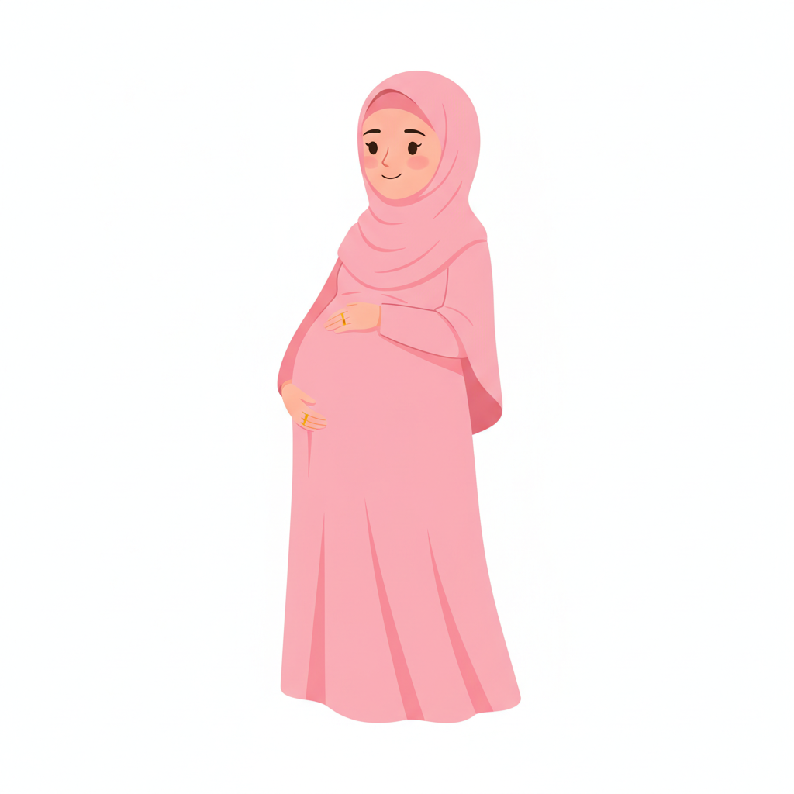
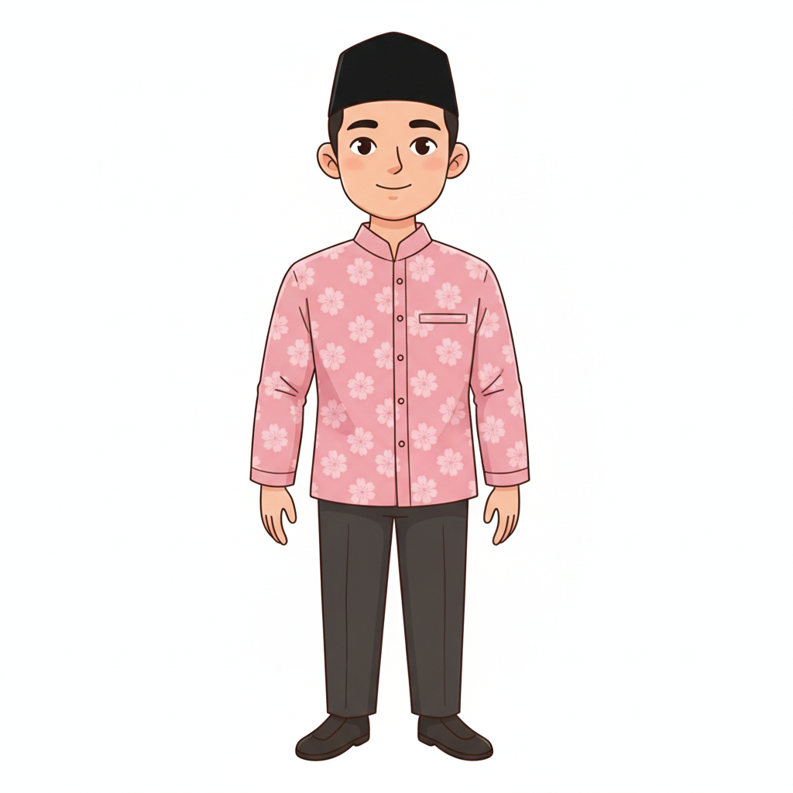
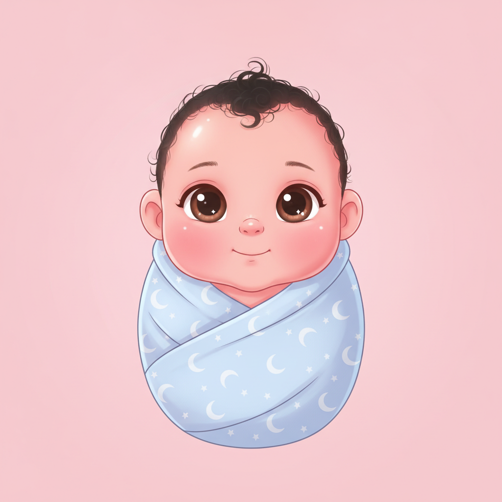

T3-01
Suara untuk Ananda
Mengenal suara orang tua sejak dalam kandungan.
Menumbuhkan ananda dengan ilmu dan cinta — perpaduan praktik terbaik dan tuntunan.



Mengenal suara orang tua sejak dalam kandungan.
Ikatan lewat sentuhan lembut dan gerak.
Ketenangan ibu turut menenangkan ananda.
Asupan baik untuk otak yang sedang dibentuk.
Memulai dengan doa, niat, dan adab.
Ritme satu hari yang lembut dan utuh.
Bahasa tumbuh lewat giliran berbicara.
Tubuh belajar lewat gerak dan main.
Main pura-pura menyalakan imajinasi.
Kiri: cara benar (centang hijau) · Kanan: cara keliru (silang merah).
Menemukan sebab-akibat dan rasa bilangan.
Kiri: cara benar (centang hijau) · Kanan: cara keliru (silang merah).
Irama dan musik bersama, bukan sendiri.
Kiri: cara benar (centang hijau) · Kanan: cara keliru (silang merah).
Menjelajah alam dengan seluruh indra.
Ko-regulasi: menemani emosi dengan tenang.
Adab dan kelembutan kepada sesama makhluk.
Rutinitas yang menenangkan dan teratur.
Orang tua yang tenang dan berakar.
Hadir penuh dan benar-benar memperhatikan.
Membimbing dengan sabar, bukan mengambil alih.
Belajar dari sumber yang sahih dan amanah.
Menangani keseharian dengan tenang dan cakap.
Kiri: cara benar (centang hijau) · Kanan: cara keliru (silang merah).
Merawat diri agar tidak kehabisan.
Semuanya menyatu dalam keluarga yang utuh.
Suami-istri saling menopang sebagai satu tim.